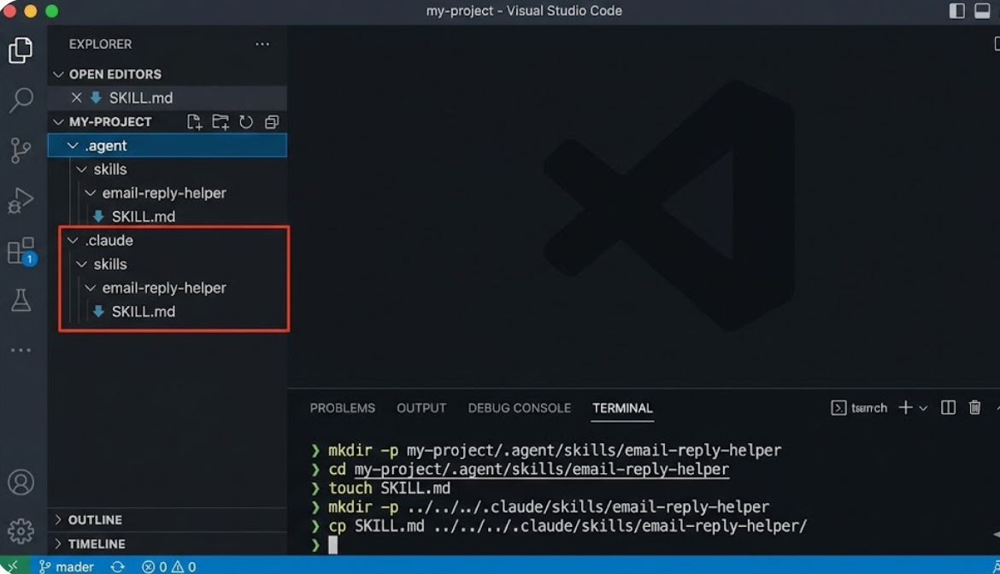

Part 3 · 動手寫第一個 Skill
實作：Email 回覆助手
從零開始，一步步完成一個可執行的 SKILL.md，讓 AI 按照你的規則回覆商業信件
動手實作
SKILL.md
Email 回覆
🎯 實作目標：你將完成什麼？
在接下來的實作中，你將從零開始寫出一個完整的 SKILL.md 檔案——「Email 回覆助手」。完成後，這個 Skill 就能部署到 Antigravity、Claude Code 或 Gemini CLI 上實際運作。
完成後你會得到
| 項目 | 內容 | 用途 |
|---|
| SKILL.md | 完整的 Email 回覆助手技能檔案 | AI 的「執行手冊」，定義所有規則 |
| assets/ 資料夾 | Email 範本和輸入表單 | 輔助資源，讓 Skill 更完整 |
| 可執行的 Skill | 部署到任一平台即可使用 | 一鍵觸發，穩定產出專業回覆 |
實作流程預覽
💻 Step 1-2
開啟終端機，建立 Skill 資料夾結構（skills-source/email-reply-helper/assets/）
✍️ Step 3
撰寫 YAML 前言（name + description），讓 AI 知道「這是什麼 Skill」
📋 Step 4-5
撰寫前置檢查、執行步驟、安全規則、輸出格式，完成完整 SKILL.md
💡 預計時間：整個實作約 15-20 分鐘。不用擔心，我們會一步步帶你完成。先跟著做，完成後再回頭理解每一段的設計邏輯。
💻 Step 1：開啟終端機
動手實作的第一步，就是開啟你的終端機（Terminal）。終端機是你和電腦溝通的文字介面，我們會用它來建立資料夾和檔案。
方法一：從 VS Code 開啟（推薦）
- 開啟 VS Code
- 選單列 → Terminal → New Terminal
- 底部會出現終端機面板，可以直接輸入指令
方法二：從作業系統開啟
- Windows：在專案資料夾中按住 Shift + 右鍵 →「在此處開啟 PowerShell」
- Mac / Linux：在專案資料夾中右鍵 →「在終端機中開啟」
💡 確認位置：打開終端機後，先確認你在正確的「專案根目錄」。Windows 輸入 cd，Mac/Linux 輸入 pwd 來確認目前位置。所有後續指令都要在專案根目錄下執行。
⚠️ 常見問題：如果終端機開在錯誤的位置（例如桌面或使用者目錄），後續建立的資料夾就會跑到錯的地方。請務必先 cd 到你的專案資料夾。

📁 Step 2：建立 Skill 資料夾
在終端機中執行以下指令，一次建好整個 Skill 的資料夾結構：
# 建立 Skill 資料夾（含 assets 子資料夾）
mkdir -p skills-source/email-reply-helper/assets
mkdir -p 的 -p 參數表示「建立所有不存在的父目錄」，所以一條指令就能把整個結構建好。
建好後的資料夾結構
skills-source/ # Skill 原始檔案根目錄
└── email-reply-helper/ # 這個 Skill 的資料夾
├── SKILL.md # 核心：技能定義檔（接下來要寫）
└── assets/ # 輔助資源
└── email-template.md # Email 回覆範本
✅ 結構說明：每個 Skill 都是一個獨立的資料夾，資料夾名稱就是 Skill 的名稱。裡面放 SKILL.md（技能定義）和 assets/（附屬資源）。這種結構方便管理、分享和版本控制。
⚠️ 命名規則：資料夾名稱必須使用小寫英文和連字號（-）。不能使用中文、空格、底線或大寫字母。例如 email-reply-helper ✅，Email Reply Helper ❌，email_reply_helper ❌。

✍️ Step 3：撰寫 YAML 前言
現在用文字編輯器（VS Code 或任何編輯器）建立 SKILL.md 檔案，在最頂端寫入 YAML Frontmatter：
name: email-reply-helper
description: >
協助撰寫專業的商業 Email 回覆信件。
當使用者需要回覆客戶來信、處理商業書信、
回應詢價或客訴時，使用此技能。
支援：詢價回覆、客訴回應、合作洽談、一般商業往來。
各欄位說明
| 欄位 | 規則 | 重點 |
|---|
--- | 前後各三個短線 | 不能多也不能少，這是 YAML 的固定語法 |
name | 小寫英文 + 連字號 | 必須與資料夾名稱完全一致 |
description: > | > 表示多行文字 | 下一行要縮排 2 格，描述越詳細越好 |
⚠️ YAML 格式陷阱：YAML 對格式極度敏感！以下是最常見的三個錯誤：
1. 使用全形冒號（：）而非半形冒號（:）
2. description: > 後面的內容沒有縮排
3. name 的值和資料夾名稱不一致
💡 description 怎麼寫：想像 AI 只看 description 來決定「要不要啟動這個 Skill」。所以要明確寫出使用場景和支援的類型。太模糊會導致 AI 錯過，太廣泛則會誤觸發。

📋 Step 4：前置檢查 + 執行步驟
在 YAML Frontmatter 之後，接著撰寫 Markdown 正文。前置檢查確保 AI 有足夠的資料開工，執行步驟則規定 AI 的工作流程。
前置檢查：確認輸入
## 前置檢查
- Check if 使用者提供了客戶來信原文
- Ask user 如果沒有提供，請使用者貼上來信內容
- Check if 使用者有指定回覆語氣（正式/友善/簡潔）
- Check if 使用者有提供署名資訊（姓名、職稱、公司）
💡 關鍵字解讀：Check if = 條件判斷（AI 自己檢查輸入）；Ask user = 主動詢問（向使用者要缺少的資料）。這兩個指令讓 AI 在開始工作前先「確認材料齊全」。
執行步驟：逐步流程
## 執行步驟
### Step 1：分析來信
- 識別來信類型（詢價 / 客訴 / 合作 / 一般）
- 提取關鍵資訊（對方需求、時間限制、聯繫方式）
- 判斷情緒傾向（正面 / 中性 / 負面）
### Step 2：撰寫回覆
- MUST 使用專業商業語氣
- MUST 針對來信每個問題逐一回覆
- 根據來信類型套用對應的回覆框架
### Step 3：自我檢查
- 確認所有問題都已回覆
- 確認語氣一致、沒有前後矛盾
- 確認沒有違反安全規則
🎯 設計要點：每個 Step 都要有明確的產出物。Step 1 產出「分析結果」，Step 2 產出「回覆草稿」，Step 3 產出「最終版本」。這樣 AI 才知道每一步該做到什麼程度。
🛡️ Step 5：安全規則 + 輸出格式
安全規則是你的「紅線清單」，告訴 AI 什麼事情絕對要做和絕對不能做。輸出格式則確保每次的結果都長得一樣。
安全規則：設定紅線
## 安全規則
- MUST 使用繁體中文撰寫回覆
- MUST 保持專業禮貌的語氣
- MUST 在回覆中附上署名區塊
- NEVER 承諾超出權限的事項（如折扣、退款）
- NEVER 透露公司內部定價策略
- NEVER 使用非正式的網路用語（如 lol、XD）
⚠️ 重要提醒：MUST 和 NEVER 是 Skill 的「絕對規則」關鍵字。AI 會特別注意這兩個詞，所以要用在真正重要的地方，不要濫用。一般建議 MUST 3-5 條、NEVER 3-5 條。
輸出格式：規範交付物
## 輸出格式
信件格式如下：
Re: [原始主旨]
[對方稱呼] 您好，
- 第一段：感謝來信 / 回應主題
- 第二段：針對各問題逐一回覆
- 第三段：後續行動 / 邀請進一步聯繫
順頌商祺
[使用者姓名] | [職稱] | [公司名稱]
💡 格式越具體越好：不要只寫「輸出一封 Email」，要像上面一樣把每一段的結構、內容方向都規範清楚。格式越明確，AI 產出的結果越穩定一致。
✅ 完成！完整 SKILL.md 全貌
恭喜！你已經寫完了所有段落。讓我們回顧一下完整的 SKILL.md 檔案結構，確認每個部分都到位：
| 段落 | 行數（約） | 功能 | 關鍵字 |
|---|
| YAML Frontmatter | ~7 行 | AI 辨識這個 Skill 的身分 | name、description |
| ## 前置檢查 | ~5 行 | 確認輸入資料齊全 | Check if、Ask user |
| ## 執行步驟 | ~15 行 | 定義 AI 的工作流程 | Step 1、Step 2、Step 3 |
| ## 安全規則 | ~8 行 | 設定紅線和底線 | MUST、NEVER |
| ## 輸出格式 | ~12 行 | 規範最終交付物的樣子 | 格式描述 + 結構範例 |
| ## 範例 | ~15 行 | 給 AI 看「正確答案長這樣」 | 輸入 → 預期輸出 |
🎉 成就解鎖：你已經完成了第一個 SKILL.md！總共約 60-80 行 Markdown，就能定義一個完整的 AI 技能。這就是 Skill 的魅力——用最少的文字，讓 AI 做最多的事。
💡 進階技巧：如果你的 Skill 需要更多細節，可以在 ## 範例 段落中加入多個不同情境的輸入/輸出範例（詢價、客訴、合作邀約），讓 AI 有更多參考依據。

✔️ 自我檢查清單
寫完 SKILL.md 後，請逐一核對以下檢查項目。這些是最容易出錯的地方，花 2 分鐘檢查一遍，可以省下之後 20 分鐘的除錯時間：
- ✅ YAML 前言格式正確？三個短線
--- 開頭結尾，name: 和 description: 後面有空格
- ✅ name 與資料夾名稱一致？如
email-reply-helper，大小寫、連字號都要完全相同
- ✅ description 描述觸發條件？明確寫出「當使用者 _____ 時，使用此技能」
- ✅ 五大章節都有？前置檢查、執行步驟、安全規則、輸出格式、範例
- ✅ MUST / NEVER 規則清楚？用在真正重要的地方，各 3-5 條
- ✅ 輸出格式有具體範例？AI 看了知道「做出來要長怎樣」
⚠️ 三大常見錯誤：
1. name 不一致 -- 資料夾叫 email-reply-helper 但 YAML 中寫成 email_reply_helper，AI 就找不到
2. YAML 縮排用 Tab -- YAML 只接受空格！混用 Tab 會導致解析失敗
3. description 太簡短 -- 只寫「Email 工具」，AI 根本不知道何時該觸發
🎯 通過所有檢查？恭喜！你的 SKILL.md 已經準備好部署了。如果有任何項目不確定，現在就是修改的好時機。

📂 assets 資料夾：放入範本和參考文件
除了核心的 SKILL.md，你還可以在 assets/ 資料夾中放入輔助資源，讓 Skill 更完整、更實用。
Email 回覆助手的 assets 內容
| 檔案名稱 | 用途 | 內容說明 |
|---|
email-template.md |
回覆範本 |
預先定義好的 Email 回覆格式範本，包含各種情境（詢價、客訴、合作）的回覆框架，AI 可以參考這些範本來產出更精準的回覆 |
tone-guide.md（選用） |
語氣指南 |
定義公司的「說話風格」，例如用語規範、禁用詞彙、品牌調性等，確保所有回覆都符合公司形象 |
在 SKILL.md 中引用 assets
## 執行步驟
### Step 2：撰寫回覆
- 參考 @assets/email-template.md 中的範本格式
- 根據來信類型選擇對應的回覆框架
- MUST 遵循範本的段落結構
💡 @assets/ 語法：在 SKILL.md 中使用 @assets/filename.md 來引用 assets 資料夾中的檔案。AI 在執行 Skill 時會自動讀取這些引用的資源。這就是三層架構中「第三層：資源」的實際應用。
🎯 assets 的好處：把範本和參考資料獨立出來，而非全部塞進 SKILL.md，有兩個好處：(1) SKILL.md 保持精簡，AI 載入更快；(2) 範本可以獨立更新，不影響 Skill 的核心邏輯。
🔧 動手改成你的版本
你已經看完了完整的 Email 回覆助手範例，現在是最重要的步驟——把它改成你自己的 Skill！不管你是什麼行業，都可以用同樣的結構來打造專屬的 AI 技能。
1
改主題
把 Email 回覆改成你的工作場景。例如：會議紀錄整理、客戶報告撰寫、社群貼文生成、教案設計。修改 name 和 description 欄位。
2
改流程
根據你的實際工作步驟，重新設計執行步驟。想想你平常怎麼做這件事，把步驟一個一個列出來，每一步都要有明確的產出物。
3
改規則
加入你的行業限制和紅線。例如醫療 NEVER 提供診斷建議，金融 NEVER 預測股價走勢，教育 MUST 適合學生年齡層。
4
改格式
指定你要的輸出樣式。要表格？要清單？要分段落？要 JSON？根據你的下游需求來決定輸出格式，越具體越好。
💡 改造訣竅：先從小改動開始，確認能跑再加複雜度。第一版不用完美，先求「能用」，再慢慢迭代成「好用」。一個能跑的 60 分 Skill，比一個寫不完的 100 分 Skill 有用得多。
🎯 實作時間（5 分鐘）：打開你的文字編輯器，複製 Email 回覆助手的結構，把 name 和 description 改成你自己的主題。完成後舉手讓老師看一下！
📝 Part 3 重點回顧
恭喜你完成了第一個 Skill 的撰寫！讓我們確認一下你現在應該具備的能力：
1
能建立 Skill 資料夾
用終端機建立 skills-source/skill-name/assets/ 結構，知道命名規則（小寫英文 + 連字號），能正確放置 SKILL.md 和 assets 檔案。
2
能撰寫完整 SKILL.md
YAML Frontmatter（name + description）+ 五大章節（前置檢查、執行步驟、安全規則、輸出格式、範例）。掌握 MUST、NEVER、Check if、Ask user 四大關鍵字。
3
能改造成自己的版本
從範例出發，修改主題、流程、規則、格式四個維度，打造屬於你工作場景的專屬 AI Skill。先求能用，再求好用。
🎯 接下來的 Part 4：我們要把你剛寫好的 SKILL.md 部署到 Antigravity 平台上，實際跑跑看！讓你的 Skill 從「紙上談兵」變成「真正能用」。準備好了嗎？